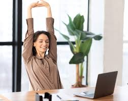
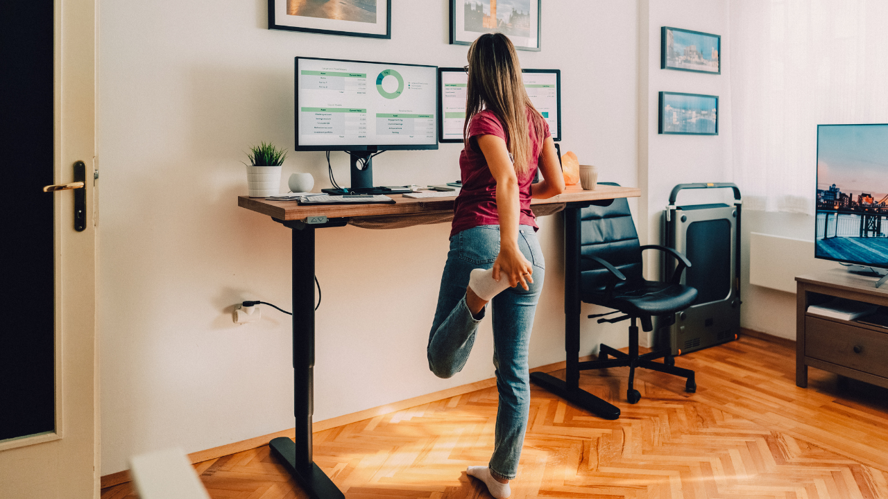
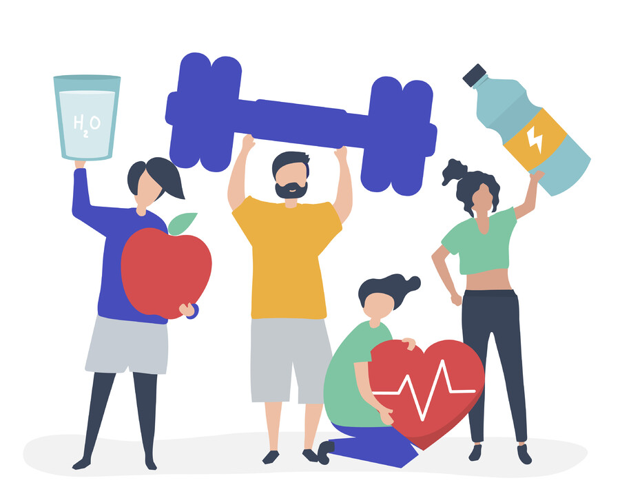

Ejercicios y Pausas
Prevención del sedentarismo y trastornos musculoesqueléticos en el sector IT. Las pausas activas son esenciales para resetear cuerpo y mente durante la jornada.

¿Por qué parar?
El trabajo estático prolongado reduce la circulación y fatiga los tejidos musculares.
- Rompe el ciclo del sedentarismo.
- Reduce la fatiga mental acumulada.
- Reactiva la oxigenación muscular.
Cuello y Hombros
Libera la tensión acumulada en el trapecio y las cervicales por mirar la pantalla.
- Giros suaves de cabeza laterales.
- Encogimiento de hombros hacia atrás.
- Mentón al pecho para estirar nuca.
Manos y Muñecas
Fundamental para prevenir el Síndrome del Túnel Carpiano por el uso del ratón.
- Estirar brazo y tirar dedos atrás.
- Rotación suave de ambas muñecas.
- Abrir y cerrar manos con fuerza.
Espalda y Lumbar
Alivia la presión en los discos intervertebrales tras horas sentado.
- Torsiones suaves de tronco.
- Intentar tocar las puntas de los pies.
- Estiramiento lateral de brazos.

Piernas y Retorno
Evita la acumulación de líquidos y el entumecimiento de los miembros inferiores.
- Caminar 2 minutos cada hora.
- Levantar talones repetidamente.
- No cruzar las piernas al estar sentado.

Recomendaciones
Pequeños cambios en tu rutina diaria que marcan una gran diferencia a largo plazo.
- Micro-pausas de 5 min cada hora.
- Hidratación constante (beber agua).
- Configurar alertas de movimiento.